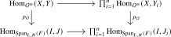
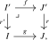
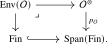

We now construct the envelope of an \(\infty \)-operad. As mentioned in the introduction to this chapter, it will be convenient to work in greater generality. Our approach is heavily inspired by [Barkan et al. (2022)], in which the authors construct a very general envelope construction using a notion of algebraic pattern. To simplify the exposition, we will forgo some of the generality and only consider a special case of their setup.
Convention 17.3.1. Throughout this section, we fix an adequate triple \(\Ff = (F,F_L,F_R)\) which satisfies the following three conditions:
- (1)
-
The \(\infty \)-category \(F\) is extensive in the sense of Definition 13.3.1, and the triple \((F,F_L,F_R)\) is weakly coextensive in the sense of Definition 13.3.3;
- (2)
-
Morphisms in \(F_L\) satisfy left cancellation: given \(l\colon I \to J\) and \(l'\colon J \to K\), if \(l' \in F_L\) and \(l'l \in F_L\) then also \(l \in F_L\);
- (3)
-
For every \(I\in F\), the morphism \(\emptyset \to I\) is contained in \(F_L\).
Note that this in particular implies that \(F_L\) contains all inclusions \(I_i \hookrightarrow \bigsqcup _{j=1}^n I_j\) for \(I_1, \dots , I_n \in F\): by weak coextensivity, \(F_L\) is closed under finite coproducts, so the inclusion is the coproduct of \(\id _{I_i}\) with the morphisms \(\emptyset \to I_j\) for \(j \neq i\).
Example 17.3.2. The main two examples are the adequate triples \((\Fin ,\Fin ,\Fin )\) and \((\Fin ,\Fin _{\inj },\Fin )\), where \(\Fin _{\inj } \subseteq \Fin \) is the wide subcategory of injections.
These are the only two cases needed later in this book. The extra generality is nevertheless useful: it exhibits the envelope construction as a reusable feature of span patterns rather than a peculiarity of ordinary symmetric operads. The examples below indicate how the same method extends to settings arising in equivariant and global homotopy theory.
Example 17.3.3. More generally, let \(G\) be a finite group and let \(\Fin _G\) be the category of finite \(G\)-sets. Then the adequate triples \((\Fin _G,\Fin _G,\Fin _G)\) and \((\Fin _G,(\Fin _G)_{\inj }, \Fin _G)\) are examples.
Example 17.3.4. Let \(\FinGrpd \subseteq \Grpd \subseteq \Cat \) denote the full (2,1)-category of finite groupoids. Under the fully faithful inclusion \(\Grpd \hookrightarrow \An \), we may identify this with the full subcategory of animae spanned by objects of the form \(\bigsqcup _{i=1}^n BG_i\), the finite disjoint unions of classifying animae of finite groups \(G_i\). Then \((\FinGrpd ,\FinGrpd ,\FinGrpd )\) satisfies the conditions of Convention 17.3.1.
Definition 17.3.5 (\(\Ff \)-monoid). Let \(\Ff = (F,F_L,F_R)\) be an adequate triple satisfying the conditions of Convention 17.3.1.
- (1)
-
Given an \(\infty \)-category \(C\) with finite products, we say that a functor \(M\colon F_L\catop \to C\) satisfies the Segal condition if for objects \(I_1, \dots , I_n \in F\), the maps \(e_i\colon I_i \hookrightarrow \bigsqcup _{j=1}^n I_j\) induce an isomorphism \[ (e_i^*)_{i=1}^n \colon M(\bigsqcup _{j=1}^n I_j) \iso \prod _{i=1}^n M(I_i). \]
- (2)
-
For \(C\) with finite products, we define an \(\Ff \)-monoid in \(C\) to be a functor \[ M\colon \Span _{L,R}(F) \to C \] such that \(M\vert _{F_L\catop }\) satisfies the Segal condition. We denote by \[ \Mon _{\Ff }(C) \quad \subseteq \quad \Fun (\Span _{L,R}(F), C) \] the full subcategory spanned by the \(\Ff \)-monoids.
Remark 17.3.6. If \(F_L\) contains the fold maps \(I \sqcup I \to I\), then the conditions of Convention 17.3.1 imply that \((F,F_L,F_R)\) is weakly extensive. Indeed, weak coextensivity implies that \(F_L\) and \(F_R\) are closed under finite coproducts, while part (3) of Convention 17.3.1 supplies the morphisms \(\emptyset \to I\) in \(F_L\). The claim therefore follows from part (1) of Lemma 13.3.4. It follows that \(F_L\) admits finite coproducts, and a functor \(F_L\catop \to C\) satisfies the Segal condition if and only if it preserves finite products. Similarly, part (1) of Lemma 13.3.8 shows that \(\Span _{L,R}(F)\) admits finite products, and a functor \(M\colon \Span _{L,R}(F) \to C\) is an \(\Ff \)-monoid if and only if it preserves finite products.
Example 17.3.7. For \(\Ff = (\Fin ,\Fin ,\Fin )\), the \(\Ff \)-monoids are precisely the commutative monoids from Definition 5.3.4.
For \(\Ff = (\Fin ,\Fin _{\inj },\Fin )\), the \(\infty \)-category \(\Span _{\inj ,\all }(\Fin )\) is equivalent to the (classical) category \(\Fin _*\) of finite pointed sets, and the resulting \(\Ff \)-monoids are precisely the commutative monoids as defined by Lurie (2017). By Proposition 5.3.9, restriction along the inclusion induces an equivalence between these two definitions.
Definition 17.3.8. We define an \(\Ff \)-monoidal \(\infty \)-category to be an \(\Ff \)-monoid in \(\Cat _{\infty }\).
Remark 17.3.9. Using the straightening-unstraightening equivalence \(\Un ^{\cc }\colon \Fun (\Span _{L,R}(F), \Cat _{\infty }) \iso \Cocart (\Span _{L,R}(F))\), we may identify the category of \(\Ff \)-monoidal \(\infty \)-categories with a full subcategory of \(\Cocart (\Span _{L,R}(F))\). We denote the unstraightening of an \(\Ff \)-monoidal \(\infty \)-category \(C\) by \(p_{C}\colon C^{\otimes } \to \Span _{L,R}(F)\).
In the following, we recall from Proposition 17.1.10 that the span category \(\Span _{L,R}(F)\) comes equipped with a canonical factorization system \((\Ll ,\Rr )\), where \(\Ll = F_L\catop \) consists of the backwards spans and \(\Rr = F_R\) consists of the forwards spans.
Definition 17.3.10 (\(\Ff \)-operad). Let \(\Ff = (F,F_L,F_R)\) be an adequate triple satisfying the conditions of Convention 17.3.1. An \(\Ff \)-operad is a pair \(\Oo = (\Oo ^{\otimes },p_{\Oo })\) consisting of an \(\infty \)-category \(\Oo ^{\otimes }\) and a functor \(p_{\Oo }\colon \Oo ^{\otimes } \to \Span _{L,R}(F)\) satisfying the following three conditions:
- (1)
-
The functor \(p_{\Oo }\) is an \(\Ll \)-cocartesian fibration;
- (2)
-
The straightening \(F_L\catop \to \Cat _{\infty }\) of the resulting cocartesian fibration \(\Oo ^{\otimes }\vert _{F_L\catop } \to F_L\catop \) satisfies the Segal condition: for all \(J_1, \dots , J_n \in F\) we have \[ \Oo ^{\otimes }_{\bigsqcup _{i=1}^n J_i} \iso \prod _{i=1}^n \Oo ^{\otimes }_{J_i}. \]
- (3)
-
Consider objects \(I, J_1, \dots , J_n \in F\), \(X \in \Oo ^{\otimes }_I\) and \(Y \in \Oo ^{\otimes }_J\) with \(J := \bigsqcup _{i=1}^n J_i\). Let \(Y \to Y_i\) be cocartesian lifts of the backwards maps \(J \hookleftarrow J_i \xrightarrow {=} J_i\). Then the induced commutative square

is a pullback square.
Given another \(\Ff \)-operad \(\Pp = (\Pp ^{\otimes },p_{\Pp })\), a morphism of \(\Ff \)-operads is a \(\Ll \)-cocartesian functor \(f\colon \Oo ^{\otimes } \to \Pp ^{\otimes }\) over \(\Span _{L,R}(F)\). We denote by \[ \Op _{\Ff } \subseteq (\Cat _\infty )^{\Ll \mathrm {-cocart}}_{/\Span _{L,R}(F)} \] the full subcategory spanned by the \(\Ff \)-operads.
Construction 17.3.11. We construct a functor \[ \Mm \colon \Mon _{\Ff }(\Cat _{\infty }) \to \Op _{\Ff }. \] Given an \(\Ff \)-monoidal \(\infty \)-category \(C\), its unstraightening \(p_{C}\colon C^{\otimes } \to \Span _{L,R}(F)\) is an \(\Ff \)-operad: conditions (1) and (2) are obvious, and (3) is proved just like in Lemma 14.2.4. Similarly, for an \(\Ff \)-monoidal functor \(C \to D\) (i.e. a morphism in \(\Mon _{\Ff }(\Cat _{\infty })\)) the map on unstraightenings \(C^{\otimes } \to D^{\otimes }\) is a cocartesian functor, hence in particular \(\Ll \)-cocartesian. This shows that unstraightening defines the desired functor \(\Mm \).
Proposition 17.3.12. The functor \(\Mm \colon \Mon _{\Ff }(\Cat _{\infty }) \to \Op _{\Ff }\) admits a left adjoint \[ \Env _{\Ff }\colon \Op _{\Ff } \to \Mon _{\Ff }(\Cat _{\infty }), \] called the \(\Ff \)-operadic envelope construction.
Proof. By definition, \(\Op _{\Ff }\) is a full subcategory of \((\Cat _\infty )^{\Ll \mathrm {-cocart}}_{/\Span _{L,R}(F)}\). We will similarly identify \(\Mon _{\Ff }(\Cat _{\infty })\) with a full subcategory of \(\Cocart (\Span _{L,R}(F))\), see Remark 17.3.9. Recall from Corollary 17.2.10 that the forgetful functor \(\Cocart (\Span _{L,R}(F)) \hookrightarrow (\Cat _\infty )^{\Ll \mathrm {-cocart}}_{/\Span _{L,R}(F)}\) admits a left adjoint \[ E_{\Rr }\colon (\Cat _\infty )^{\Ll \mathrm {-cocart}}_{/\Span _{L,R}(F)} \to \Cocart (\Span _{L,R}(F)). \] Since \(\Mm \) is defined as the restriction of this forgetful functor, it remains to show that \(E_{\Rr }\) restricts to a functor \[ \Env _{\Ff }\colon \Op _{\Ff } \to \Mon _{\Ff }(\Cat _{\infty }). \] To this end, let \(\Oo \) be an \(\Ff \)-operad, and consider the cocartesian fibration \(E_{\Rr }(p_{\Oo }) \to \Span _{L,R}(F)\) from Proposition 17.2.8. We must show that its straightening \(\Span _{L,R}(F) \to \Cat _{\infty }\) satisfies the Segal condition. The description of cocartesian morphisms in Proposition 17.2.8, applied to the factorization of a composite of spans, gives the following explicit description of this straightening:
- On objects, it sends \(I \in F\) to the pullback \(\infty \)-category \((F_R)_{/I} \times _{\Span _{L,R}(F)} \Oo ^{\otimes }\).
- Given a backwards morphism \(g\colon J \leftarrow I\), the functor \((F_R)_{/J} \times _{\Span _{L,R}(F)} \Oo ^{\otimes } \to (F_R)_{/I} \times _{\Span _{L,R}(F)} \Oo ^{\otimes }\) sends a pair \((X,r\colon J' \to J)\) with \(r \in F_R\) and \(X \in \Oo ^{\otimes }_{J'}\) to the pair \((Y,r'\colon I' \to I)\), where \(r'\) is
defined via the pullback square and where \(Y\) is the target of a \(p_{\Oo }\)-cocartesian lift \(\hat {f}_X\colon X \to Y\) of \(f\).

- Given a forward morphism \(g\colon I \to J\), the transport functor sends \((X,r\colon K \to I)\) to \((X,gr\colon K \to J)\).
Indeed, in the backwards case the displayed pullback is precisely the factorization of the composite span used in Proposition 17.2.8. In the forward case, the composite \(gr\) already belongs to \(F_R\), so its factorization has left factor \(\id _K\) and the cocartesian lift leaves \(X\) unchanged. Consider now a collection of objects \(J_1, \dots , J_n\) and let \(J := \bigsqcup _{i=1}^n J_i\). We must show that the map \[ (F_R)_{/J} \times _{\Span _{L,R}(F)} \Oo ^{\otimes } \to \prod _{i=1}^n (F_R)_{/J_i} \times _{\Span _{L,R}(F)} \Oo ^{\otimes } \] is an equivalence.
Essential surjectivity: Consider an object \((X_i,r_i\colon I_i \to J_i)_{i=1}^n\) of the target. We define \(I := \bigsqcup _{i=1}^n I_i\), let \(r\colon I \to J\) be the map whose \(i\)-th component is \(r_i\), and we let \(X \in \Oo ^{\otimes }_I\) correspond to the tuple \((X_i)_{i=1}^n\) under the equivalence \(\Oo ^{\otimes }_I \iso \prod _{i=1}^n \Oo ^{\otimes }_{I_i}\) from condition (2) of Definition 17.3.10. Then \((X,r\colon I \to J)\) is the desired preimage.
Full faithfulness: Consider two objects \((X,r\colon I \to J)\) and \((X',r'\colon I' \to J)\) of \((F_R)_{/J} \times _{\Span _{L,R}(F)} \Oo ^{\otimes }\). We must show that the map \[ \Hom _{(F_R)_{/J}}(I,I') \times _{\Hom _{\Span _{L,R}(F)}(I,I')} \Hom _{\Oo ^{\otimes }}(X,X') \to \prod _{i=1}^n \Hom _{(F_R)_{/J_i}}(I_i,I'_i) \times _{\Hom _{\Span _{L,R}(F)}(I_i,I'_i)} \Hom _{\Oo ^{\otimes }}(X_i,X'_i) \] is an equivalence. Extensivity of \(F\) gives an equivalence \(F_{/J} \simeq \prod _i F_{/J_i}\). It restricts to the displayed slices of \(F_R\): membership in \(F_R\) is preserved by base change along the inclusions \(J_i \hookrightarrow J\) by adequacy, and is detected on the resulting components because \(F_R\) is closed under finite coproducts by weak coextensivity. Consequently \((F_R)_{/J} \to \prod _{i=1}^n (F_R)_{/J_i}\) is an equivalence, and hence there is a natural equivalence \[ \Hom _{(F_R)_{/J}}(I,I') \simeq \prod _{i=1}^n \Hom _{(F_R)_{/J_i}}(I_i,I'_i). \] It thus remains to show that this map induces equivalences on fibers for every map \(f \in \Hom _{(F_R)_{/J}}(I,I')\). Condition (3) of Definition 17.3.10 identifies the relevant fiber with the product of the fibers of \(\Hom _{\Oo ^\otimes }(X,X'_i)\) over the spans \(I \leftarrow I_i \to I'_i\). Cocartesian transport along the backwards spans \(I \leftarrow I_i \xrightarrow {=} I_i\) then identifies these fibers with those of \(\Hom _{\Oo ^\otimes }(X_i,X'_i)\) over the forward spans \(I_i \to I'_i\). This is precisely the map on fibers displayed above, so it is an equivalence. □
Let us explicitly record the main example of the \(\Ff \)-operadic envelope construction:
Proposition 17.3.13. The multimorphism operad functor \(\Mm \colon \Cat _{\infty }^{\otimes } \to \Op _{\infty }\) admits a left adjoint \[ \Env \colon \Op _{\infty } \to \Cat _{\infty }^{\otimes }. \]
Proof. This is a special case of the previous proposition. For \(\Ff = (\Fin ,\Fin ,\Fin )\), Proposition 14.1.9 identifies the objects of \(\Op _{\Ff }\) with the \(\infty \)-operads from Definition 14.1.1, while Corollary 14.1.11 identifies the two notions of morphism. □
Corollary 17.3.14. Let \(\Oo \) be an \(\infty \)-operad and let \(C\) be a symmetric monoidal \(\infty \)-category. There is a natural equivalence \[ \Alg _{\Oo }(C) \simeq \Fun ^{\otimes }(\Env (\Oo ),C). \] In other words, an \(\Oo \)-algebra in \(C\) is equivalently a symmetric monoidal functor from the envelope of \(\Oo \) to \(C\).
Proof. Let \(E\) be an \(\infty \)-category. Using Lemma 14.2.12, the adjunction of Proposition 17.3.13, and currying, we obtain natural equivalences \begin {align*} \Hom _{\Cat _{\infty }}(E,\Alg _{\Oo }(C)) &\simeq \Hom _{\Op _\infty }(\Oo ,\Mm _{\Fun (E,C)}) \\ &\simeq \Map ^\otimes (\Env (\Oo ),\Fun (E,C)) \\ &\simeq \Hom _{\Cat _{\infty }}(E,\Fun ^\otimes (\Env (\Oo ),C)). \end {align*}
Here \(\Fun (E,C)\) carries the pointwise symmetric monoidal structure. Since these equivalences are natural in \(E\), the Yoneda lemma gives the claimed equivalence of \(\infty \)-categories. □
We refer to the symmetric monoidal \(\infty \)-category \(\Env (\Oo )\) as the envelope of the \(\infty \)-operad \(\Oo \). Note that its underlying \(\infty \)-category sits in the following pullback square:

In particular, the objects of \(\Env (\Oo )\) are unordered tuples \(\{x_i\}_{i \in I}\) of colors of \(\Oo \).
Lemma 17.3.15. The monoidal unit of \(\Env (\Oo )\) is the empty tuple, and its tensor product is given by concatenation of unordered tuples: \[ \{x_i\}_{i \in I} \otimes \{y_j\}_{j \in J} \simeq \{x_i\}_{i \in I} \sqcup \{y_j\}_{j \in J}. \]
Proof. Under the Segal equivalence, the two tuples on the left determine the object of the fiber over \(\lra {2}\) indexed by their disjoint union \(I \sqcup J\). The tensor product is cocartesian transport of this object along the forward fold span \(\lra {2} \xleftarrow {=} \lra {2} \to \lra {1}\). By the forward-transport calculation in the proof of Proposition 17.3.12, this transport leaves the object of \(\Oo ^\otimes \) unchanged and postcomposes its indexing map with the fold map. The result is the concatenated tuple. The same calculation for the unique forward map \(\emptyset \to \lra {1}\) gives the empty tuple as the unit. □
Lemma 17.3.16. The envelope \(\Env (\Comm )\) of the commutative operad is the category of finite sets, with monoidal structure given by disjoint union.
Proof. The total category of the terminal operad \(\Comm \) is \(\Span (\Fin )\) itself. The pullback description of the underlying category of the envelope therefore gives \(\Env (\Comm ) \simeq \Fin \), and Lemma 17.3.15 identifies the tensor product with disjoint union. □
Lemma 17.3.17. Let \(\Oo \) be an \(\infty \)-operad, and let \(\{x_i\}_{i \in I}\) and \(\{y_j\}_{j \in J}\) be objects of \(\Env (\Oo )\). Then there is a natural equivalence \[ \Hom _{\Env (\Oo )}(\{x_i\}_{i \in I}, \{y_j\}_{j \in J}) \simeq \coprod _{f\colon I \to J} \; \prod _{j \in J} \Oo (\{x_i\}_{i \in f^{-1}(j)}; y_j), \] where the coproduct ranges over all maps of finite sets \(f\colon I \to J\). In particular, for a single output color \(y \in \Oo ^{\simeq }\) there is a natural equivalence \[ \Hom _{\Env (\Oo )}(\{x_i\}_{i \in I}, y) \simeq \Oo (\{x_i\}_{i \in I}; y). \]
Proof. As noted above, the underlying \(\infty \)-category of \(\Env (\Oo )\) is the pullback \(\Fin \times _{\Span (\Fin )} \Oo ^{\otimes }\) along the inclusion \(\Fin \hookrightarrow \Span (\Fin )\) of the forward spans. Consequently, \(\Hom _{\Env (\Oo )}(\{x_i\}_{i \in I}, \{y_j\}_{j \in J})\) is the pullback of \[ \Hom _{\Oo ^{\otimes }}(\{x_i\}_{i \in I}, \{y_j\}_{j \in J}) \longrightarrow \Hom _{\Span (\Fin )}(I,J) \] and the subanima \(\Hom _{\Fin }(I,J)\) of forward spans, which produces the coproduct over the maps \(f\colon I \to J\). Fixing such an \(f\), condition (3) of Definition 17.3.10 identifies the fiber over \(f\) with the product over \(j \in J\) of the fibers of \(\Hom _{\Oo ^{\otimes }}(\{x_i\}_{i \in I}, y_j)\) over the span \(I \hookleftarrow f^{-1}(j) \to \lra {1}\). Cocartesian transport along the inert morphism \(\{x_i\}_{i \in I} \to \{x_i\}_{i \in f^{-1}(j)}\) identifies the latter fiber with the multimorphism anima \(\Oo (\{x_i\}_{i \in f^{-1}(j)}; y_j)\). The final statement is the case \(J = \lra {1}\). □
By functoriality, any morphism of \(\infty \)-operads induces a symmetric monoidal functor on envelopes. In particular, the terminal morphism \(\Oo \to \Comm \) from any \(\infty \)-operad \(\Oo \) induces a symmetric monoidal functor \(\Env (\Oo ) \to \Env (\Comm ) \simeq (\Fin ,\amalg )\).
Proposition 17.3.18. The induced functor \[ \Env \colon \Op _{\infty } \to (\Cat _{\infty }^{\otimes })_{/(\Fin ,\amalg )} \] is fully faithful. A symmetric monoidal functor \(p\colon C \to (\Fin ,\amalg )\) lies in the essential image if and only if it satisfies the following two conditions:
- (1)
-
For every finite set \(I\), the tensor product in \(C\) defines an equivalence \[ \prod _{i \in I} C_{\{i\}} \iso C_I, \] where \(C_I\) is the fiber of \(p\) over \(I \in \Fin \);
- (2)
-
For every finite collection \((I_j)_{j \in J}\) of finite sets and every collection of objects \(X_j \in p^{-1}(I_j)\) and \(y_j \in p^{-1}(\{j\})\), the commutative square

is a pullback square, where the bottom map hits the map \(\bigsqcup _{j \in J} I_j \to \bigsqcup _{j \in J} * = J\) induced by the maps \(I_j \to *\).
Proof. The full faithfulness is an instance of Lemma 17.2.11. To identify the essential image, we first show that the two conditions are always satisfied for \(C = \Env (\Oo )\). Condition (1) follows from the Segal condition on \(\Oo \) and Lemma 17.3.15: the underlying map \(\Env (\Oo ) \to \Fin \) is simply the pullback of the map \(\Oo ^{\otimes } \to \Span (\Fin )\). For condition (2), let us write \(X := \bigotimes _{j\in J} X_j\) and \(Y := \bigotimes _{j \in J} y_j\), where these two tensor products in \(C = \Env (\Oo )\) are computed as unordered concatenations in \(\Oo ^{\otimes }\). Then we have a pullback square

The claim now follows from condition (3) of Definition 17.3.10.
It remains to show that any \(C\) satisfying (1) and (2) is of the form \(\Env (\Oo )\) for some \(\infty \)-operad \(\Oo \). We define \(\Oo \) as the following pullback:

The pullback is formed in \((\Cat _\infty )_{/\Span (\Fin )}\). It is again an \(\infty \)-operad: cocartesian lifts of backwards spans are formed componentwise, the Segal equivalences on fibers are preserved by pullback, and condition (3) is inherited by taking pullbacks of the corresponding squares. Here the bottom map is the unit of the adjunction \(\Env \dashv \Mm \). The projection \(\Oo \to \Mm _C\) induces a composite of symmetric monoidal functors \[ \Env (\Oo ) \longrightarrow \Env (\Mm _C) \longrightarrow C, \] where the second map is the counit of the adjunction. Equivalently, this is the symmetric monoidal functor corresponding under Corollary 17.3.14 to the projection \(\Oo \to \Mm _C\). Naturality of the counit with respect to \(p\) shows that this composite is a functor over \((\Fin ,\amalg )\). We show that it is an equivalence.
The colors of \(\Oo \) are precisely the objects of \(C_{\lra {1}}\). Since every object of \(\Env (\Oo )\) is a tensor product of colors, essential surjectivity follows from condition (1) on \(C\). For full faithfulness, first consider a target color \(y\in C_{\lra {1}}\). We have equivalences: \[ \Hom _{\Env (\Oo )}(\{x_i\},y) \simeq \Oo (\{x_i\};y) \simeq \Hom _C(\bigotimes _{i \in I} x_i, y) \] The first is Lemma 17.3.17. For the second, the pullback defining \(\Oo \) identifies its multimorphism anima with the fiber of \[ \Hom _C(\bigotimes _{i \in I}x_i,y) \longrightarrow \Hom _{\Fin }(I,\lra {1}) \] over the unique map \(I\to \lra {1}\); this fiber is the entire source because the target is contractible.
For a general target \(\{y_j\}_{j\in J}\), Lemma 17.3.17 decomposes the hom anima in \(\Env (\Oo )\) as a coproduct indexed by maps \(f\colon I\to J\), with the fiber over \(f\) equal to \[ \prod _{j\in J} \Hom _C\left (\bigotimes _{i\in f^{-1}(j)}x_i,y_j\right ). \] Condition (2) identifies this product with the fiber over \(f\) of \[ \Hom _C\left (\bigotimes _{i\in I}x_i,\bigotimes _{j\in J}y_j\right ) \longrightarrow \Hom _{\Fin }(I,J). \] Taking the coproduct over all \(f\) proves full faithfulness. □
Generated from the authoritative LaTeX source.